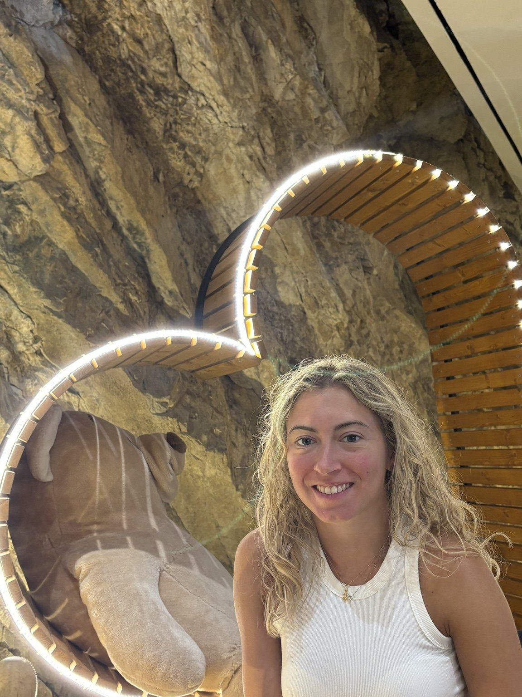
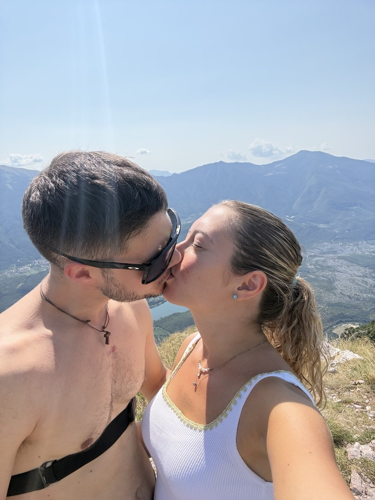
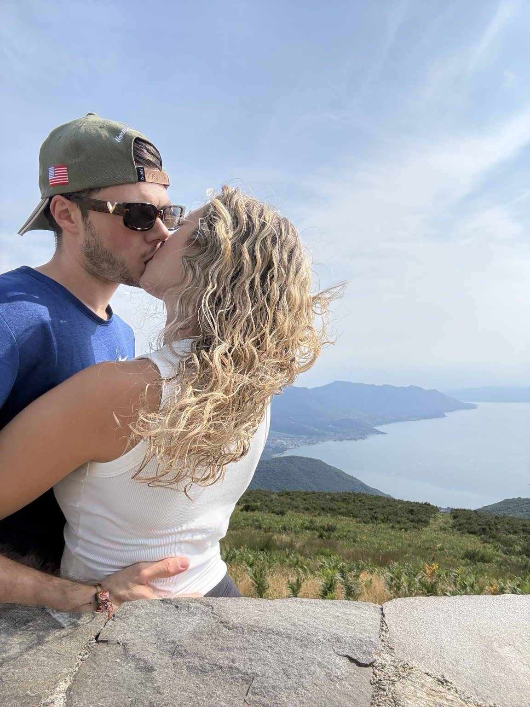
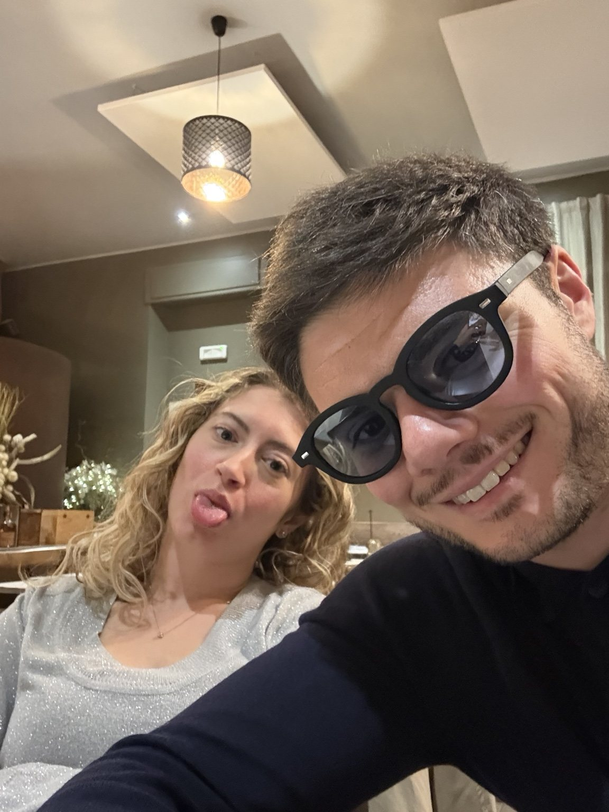
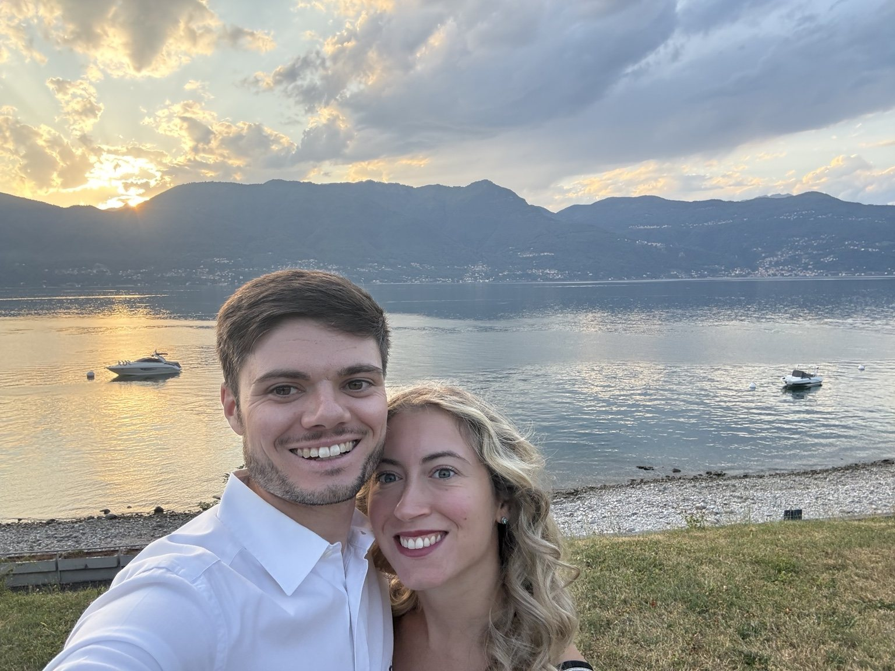
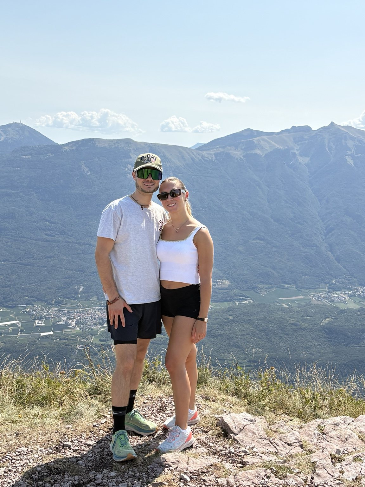

Ricordo 01
Ogni viaggio cambia il paesaggio. Tu hai cambiato il significato del viaggio.
Da Porto Cesareo in poi abbiamo capito che partire insieme significava tornare con una storia in più.
♡ tocca per custodire
Non è un biglietto da leggere. È un piccolo viaggio da attraversare: dieci ricordi, tredici frammenti della nostra storia, la nostra canzone e una sorpresa alla fine.
Tocca ogni fotografia. Non per sbloccarla davvero: per ricordarti che i momenti più belli diventano nostri quando ci fermiamo a guardarli.

Da Porto Cesareo in poi abbiamo capito che partire insieme significava tornare con una storia in più.

Dalla prima volta sotto casa tua a tutte le salite fatte insieme: la parte migliore è sempre stata esserci entrambi.

Ci siamo portati dietro casa anche quando eravamo lontanissimi da casa.

Se potessi fermare il tempo, sceglierei uno di quei minuti in cui non serviva dire niente.

È fatta di risate stupide, facce improbabili, pasta con le vongole e serate normali che insieme normali non sono mai.

E spero che questa parte di noi non cambi mai.

Un giorno alla volta, senza saltare le pagine.

E in tantissimi di quei ricordi, ci sei tu.

E continuiamo ad aggiungere posti, storie e piccole follie alla nostra mappa.

Con tutti i chilometri già fatti e quelli che non sappiamo ancora di voler fare.
13 anni, e ancora noi.
Alcune scene, anche dopo tutto questo tempo, sono ancora vive come il primo giorno.
“Burattino” — Two Fingerz
Ci sono canzoni che si ascoltano. E poi ci sono canzoni che, appena partono, ti riportano dentro una storia.
Custodisci tutti i ricordi e scopri tutte le ragioni. Poi il regalo sarà tuo.
Amo la nostra storia, ma voglio regalarti anche tutte quelle che vorrai ancora scoprire, pagina dopo pagina.
“Che la nostra storia abbia ancora così tante pagine bianche da non riuscire nemmeno a immaginarle tutte.”